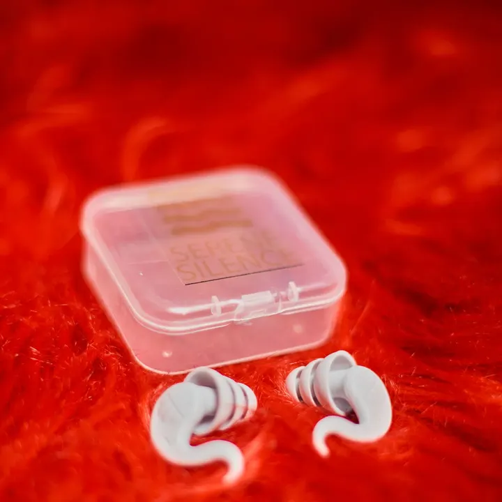

What the tribe says
★★★★★
“Five days in front of the speakers and no ringing. The sound is actually better.”
Bojan · verified buyer
★★★★★
“I forget I'm wearing them. Should have bought them years ago.”
Sanja · verified buyer
★★★★★
“Small case fits in the coin pocket, always with me.”
Luka · verified buyer